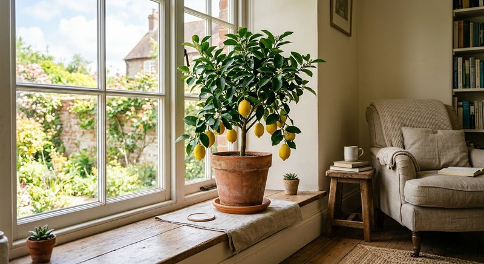

Виды растений · 2 мин чтения
Комнатный лимон дома: уход, полив и подкормка по сезонам
Комнатный лимон — светолюбивое растение, и его состояние зависит от условий не меньше, чем от питания. Если листья опадают или побеги не растут, проверьте освещение, полив, температуру и корни прежде, чем добавлять удобрение.
Материал обновлён 24.10.2026 · Справочная информация, не заменяет инструкцию на упаковке.

Основы ухода за цитрусом в горшке
Поставьте лимон в самое светлое подходящее место, избегая резких перестановок. Поддерживайте равномерный, но не заболоченный субстрат и обеспечьте отток лишней воды. Зимой в тёмной комнате рост может замедлиться.
Следите за вредителями на листьях и молодых побегах. Перепады температуры, сухой воздух, пересушка и перелив способны вызвать стресс и листопад, поэтому важна стабильность.
Как подобрать подкормку
Используйте удобрение, предназначенное для цитрусовых или разрешённое для плодовых комнатных растений. Проверьте состав и все микроэлементы, указанные на этикетке. Соблюдайте инструкцию для горшечных культур и не подкармливайте лимон автоматически при каждом поливе.
В описании Семяздрава говорится об использовании для цитрусовых, в том числе о поддержке качества плодов. Перед покупкой и применением проверьте актуальную карточку, этикетку и подходит ли продукт для вашей цели.
Почему удобрение не заменит уход
Питание не компенсирует слабое освещение, тесный горшок, повреждённые корни или вредителей. Не ждите, что одна подкормка заставит цитрус зацвести и дать плоды: плодоношение зависит от возраста растения, сорта, условий и опыления.
Записывайте даты пересадки и подкормок, наблюдайте за приростом и корректируйте уход постепенно. Если листья желтеют массово, проверьте субстрат и корни, а не добавляйте дозу наугад.
Частые вопросы
Можно ли комнатный лимон удобрять универсальным средством?
Только если цитрусовые указаны в назначении и инструкция предусматривает такой способ. Сверьте состав и дозировку.
Почему у лимона опадают листья?
Причин много: резкая смена условий, ошибки полива, нехватка света, вредители или корневая проблема. Удобрение не является универсальным решением.